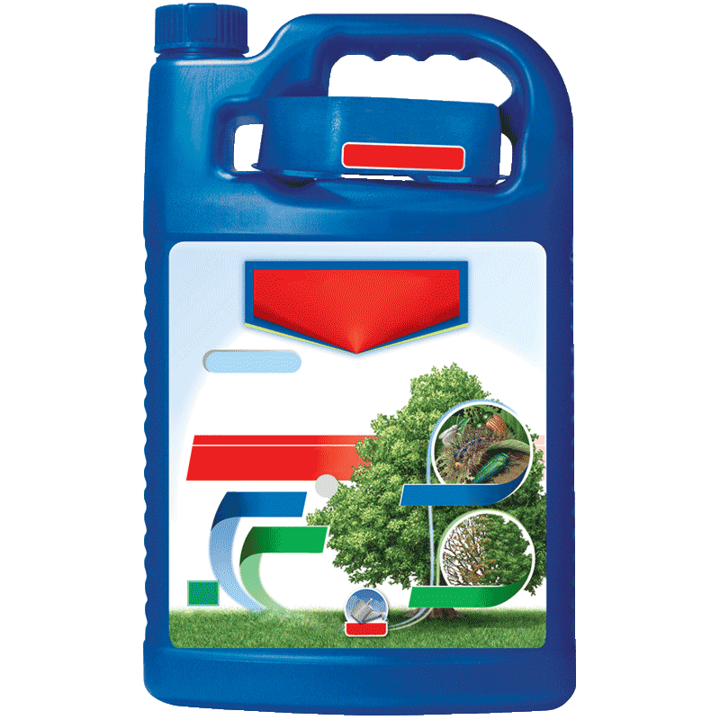
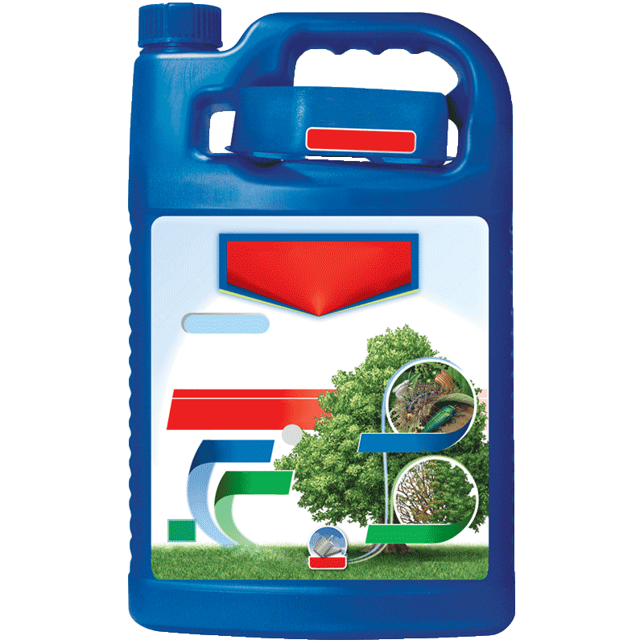
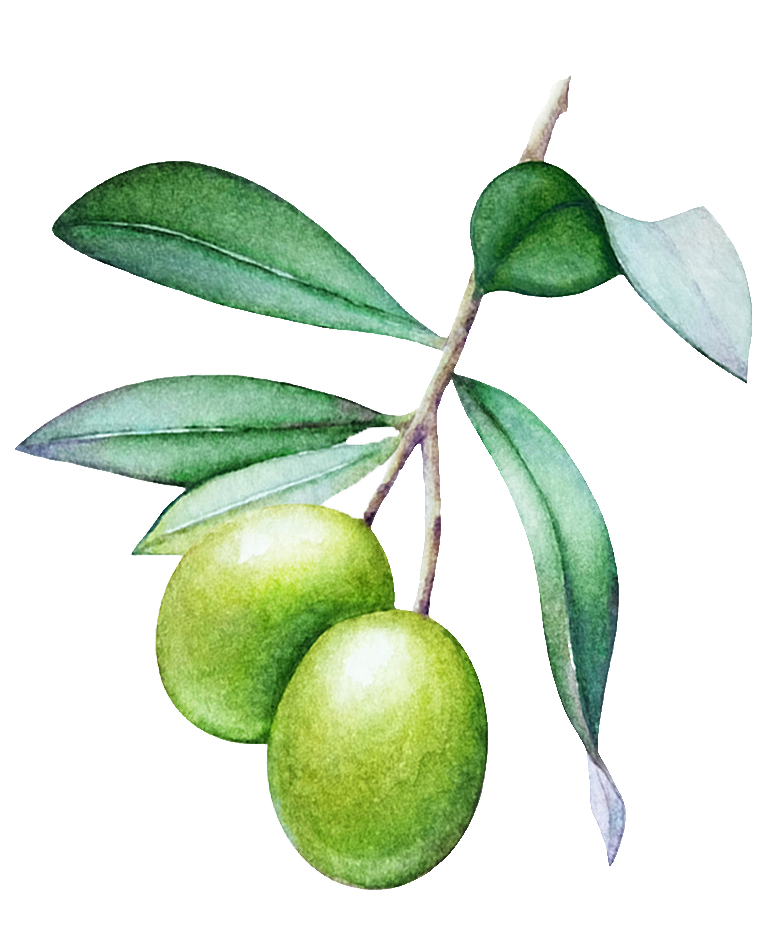
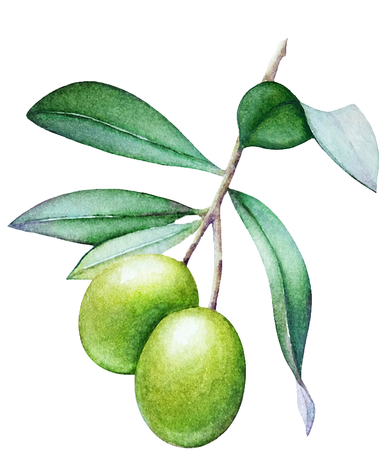
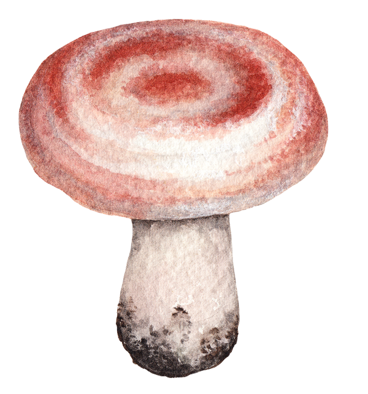
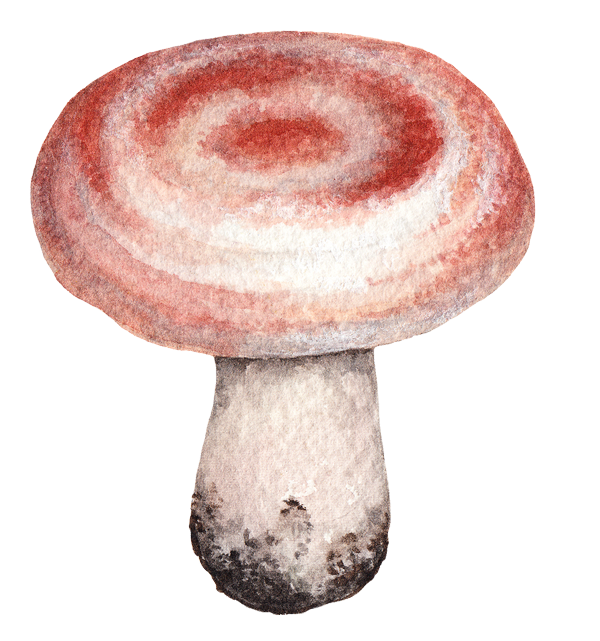

REFUGIA
Refugia: Sound Projects by 11 Women Artists
Feb 17th – Mar 14th, 2021
Alternative Space LOOP, Seoul Traffic Broadcasting
Artists: Jia Chang, Eunji Cho, Shiva Feshareki, Yang Ah Ham, Christina Kubisch, Seulgi Lee, Young Joo Lee, Tania León, Ye-eun Min, Jeon Mirai, Éliane Radigue
Curator: Ji Yoon Yang
Sponsors: Arts Council Korea, Goethe-Institut Seoul, Embassy of France in Korea

 



 



 


JIA CHANG
Jia Chang
Switch
2014, Object (drawing), 266x315cm, Buffalo hide
Statement
A poem and drawings by Chang are soldered onto the leather of a cow. The poem reflects on life and death in a moment when one seeks refuge from the pain of love and loss, longing to reunite with the lover who helped spark her inner self, against the backdrop of wind, ocean, and cliff. Under the dystopian circumstances today, the work feels more realistic than ever. The drawings in the work explore the artist’s natural instincts such as sense, taste, emotion, and sexual orientation that are untamed and uncontrolled by conventions. Each element is drawn with a smoldering iron, reeking the burning smell of skin of an animal that was once alive. At first, the leather attempts to protect the flesh that is no longer underneath, but ultimately gives in to the heat as it shrivels. The skin is then filled with fragile and delicate stories that cannot be easily shared with others, only revealed onto the surface through a closer look.
Red Drawings-Project
2020-2021, Object (postcards, text for recitation), 15x21cm each
Statement
Red Drawings-Project sends postcards to those who continue to live in isolation during the pandemic. The artist draws her everyday life on a small piece of paper like an illustrated diary, and shares the changes in her life and emotional state with others through this analogue medium. Those who receive the postcards can respond in their own manner, whether in one-on-one communication with the artist or in open conversation with the general public. This organic form of communication not only overcomes the physical limitations of a conventional art space, but also allows the viewers to experience the slow and intimate connection between people in an age saturated by digital media. The majority of participants in the project live overseas, and the work hopes to provide an opportunity to deeply reflect on the meaning of life through the act of empathy and care.
The Collected Memories
2021, Sound, 2min 30 sec
Statement
Because she is not skillful with audio, many of Chang’s previous projects simply ended up as noise. The artist understood how such noise may not appeal to the audience, and therefore, for this work, she only collected sounds that may evoke positive memories. The sounds in this work would have been considered familiar, everyday noise even a year ago, but feel rather distant now in the age of the pandemic. The sounds were edited from video footages filmed by the artist in the past. From the bells chiming from a cathedral in a small Italian village, music from a jazz club, the sound of making a wooden sculpture, a hungry stray cat licking on food, to the tuning sound of an orchestra – the once mundane but beautiful sounds of everyday life remind us of the precious and valuable moments from the past.
Biography
Jia Chang (b. 1973)
Jia Chang received a BFA and MFA degree at Korea National University of Arts’ Department of Fine Arts. She presented 9 solo exhibitions including Don’t Care If You Give Me the Evil Eye (DOOSAN Gallery, Seoul, 2020), Omerta (Alternative Space LOOP, Seoul, 2007), Where is the center of gravity? (Art Sonje Center-Seoul Art Cinema, Seoul, 2004) and participated in multiple group exhibitions such as Korean video art from 1970s to 1990s-Time Image Apparatus (MMCA, Gwacheon, 2019), Feasts on paper (Fengxian Museum, Shanghai, 2019), and Move on Asia: Oriental Metaphor (Alternative Space LOOP, Seoul, 2012). The artist was awarded the Korea Artist Prize (MMCA, Seoul, 2014) and Doosan Yonkang Artist Award (Doosan Foundation, Seoul, 2012). She also took a part in Doosan New York Residency (2014) and MMCA Changdong Residency (2006).
EUNJI CHO
Eunji Cho
Song for My Twin Octo-8
2020, Video, 10min 15sec
Statement
Through my relationship with the black ink fish (octopus), I imagine the emergence of a new language, for a new kind of existence that disrupts the narrow-minded ideologies of our anthropocentric world. Humans have continued to ignore the language of the Earth and have forgotten what they needed to be. The language that centered around humans now seems like the stale nostalgia of last century. The language of this new existence is a tainted and hybrid language, which is only made possible through failure, and by escaping the perfect language.
Practicing this hybrid language, the performers shift away from the space of humans to sing a song for the octopus in the water. This song is an altered form of communication that is difficult to comprehend, and physically unsustainable in a new space. It is without a beginning or end, and escapes the structures of the past, present, and future. It is a language without boundaries between the self and others, subject and object.
This project had to be modified from its original filming plan due to the unexpected conditions of COVID-19. I decided to proactively acknowledge this situation. I stayed in my place while the performers also performed from their respective places. I communicated the basic instructions to my performers in two places, Korea and Indonesia, and asked them to perform as they interpreted them. I accepted any element of chance that emerged from these two places, and after reviewing the video clips, allowed my own intentions to naturally diverge from the original plan. The process of this work involved many layers of change, but was ultimately a journey towards the freedom of language through failure and the chaos of change.
Biography
Eunji Cho (b. 1973)
Eunji Cho presented 8 solo exhibitions including Dancing Between Two Earths (Alternative Space LOOP, Seoul, 2020), The Heat, The Wind (Art Space Pool, Seoul, 2017), FALLING EGGS (One and J. Gallery, Seoul, 2016). Selected group exhibitions include Anthropocene: Korea X Brazil 2019-2021 (Ilmin Museum of Art-Associação Cultural Videobrasil, http://videobrasil.online/Videobrasil Online Exhibition), Ecological Sense (Nam June Paik Art Center, Yongin, 2019), Immortality in the Cloud (Ilmin Museum of Art, Seoul, 2019, Looms & Battles (Total Museum, Seoul, 2018), Plastic Myths (ACC, Gwangju, 2015), Dtang, The Mud Said (Duesseldorf Festival, FFT Duesseldorf, 2012) and has also participated in the Netherland DCR residency in 2008. The artist currently features artworks that present the emergence of a language that exists in a new form, which dismantles the anthropocentric ideology through a relationship with a fish bearing ink(文魚, octopus).
SHIVA FESHAREKI
Shiva Feshareki
Vapour
2020, Sound, 4min 37sec
Statement
Biography
Shiva Feshareki (b, 1987, London)
Shiva Feshareki obtained a Doctorate of Music from the Royal College of Music, London and is an acclaimed Iranian-British artist. Presenting work through collaboration with electronic sound and classical orchestra, Feshareki explores the diverse context of experimental music which crosses a classical form and an experimental methodology border. The artist was a professor of the Royal College of Music during 2016-2017, and she has also served as a director of the Brighter Sounds: Both Sides Now (Manchester, UK) in 2018. Recently, she participated in Pioneras Electrónicas (Mexico City, 2020), New Music Biennial (Southbank Centre, London, 2019) funded by the PRS foundation, and in Ulverston Music Festival (London, 2010), National Youth Orchestra of Great Britain residency program (UK, 2005).
YANG AH HAM
Yang Ah Ham
Empty World
2020, Video (including sound)
Statement
“If ‘evolution’ in the past referred to the process in which our ‘internal organs (heart, lung, and etc.)’ gradually adapt based on solar energy, the term now signifies the process of adapting to the rapid changes of the ‘external organs (cars, airplanes, etc.)’ that rely on the Earth’s low-entropy. The unequal possession of external organs, along with the unequal possession of the low-entropy reserve that produce those external organs, are the origins of social conflict in an industrial society. This is in stark contrast to the relatively equal possession of internal capital.” – Herman Daly
Unlike solar energy, which seems unlimited, fossil fuel and the greedy competition to control its limited supply have caused major socioeconomic conflicts in modern industrial society and finance. However, if this socioeconomic realm continues to expand and ultimately converge with the boundaries of the ecosystem on the outside, society can no longer exist in this exhausted world. This present moment calls for a shift in values, from external growth to internal growth that allows for coexistence.
Biography
Yang Ah Ham (b. 1968)
Yang Ah Ham lives and works in Korea, Turkey and the Netherland. Her interest lies in developing an art practice as a mode of social criticism. She focuses on individual lives and alternative social systems through her own experience in different societies. Ham has taken a part in various solo and group exhibitions including To the Wavering: 2020 Title Match Yang Ah Ham vs. Dongjin Seo (SeMA, Buk-Seoul Museum of Art, 2020), Undefined Panorama 2.0 (Alternative Space LOOP, Seoul, 2019), Trans–Justice (MOCA, Taipei, 2018), Asia Art Biennale (Taiwan National Museum of Fine Arts, 2017), Media City Seoul Biennale (SeMA, Seoul, 2016), Discordant Harmony (Art Sonje Center, Hiroshima MOCA, Taipei Kuandu Museum, 2015-16), and the Artist of the year prize show (MMCA, Gwacheon, 2013). She was awarded the Daum Prize (2004), and the Art of the year prize (Art council of Korea, 2005). Ham participated in Rijksakademie residency in Amsterdam from 2006 to 2007.
CHRISTINA KUBISH
Christina Kubisch
Tesla’s Dream
2014, 22min 56sec
Statement
a piece about wireless energy, copper coils, magnetic induction, remote controls and Nikola Tesla.
The figure of Nikola Tesla has fascinated me since a long time. He was the person who imagined wireless communication in an era when there was hardly electricity. He was the one who invented radio controlled devices and other new technologies beyond the generally known limits of technology.
Tesla had been picking up radio signals in New York since 1895 receiving them as far as thirty miles away. He was not only an inventor whose work was the basis for the development of many electrical inventions and communication techniques of today but was as well a very special person, a visionary who was unable to realize many of his ideas because of money problems and as well his “difficult” character.
I discovered his work during my studies of electronics in Milan at the end of the seventies. In that period I started to use the system of electromagnetic induction for my sound installations. Tesla had invented and patented the first telephone amplifier in 1882 in Budapest and, without knowing about its origin, I used a simple telephone amplifier with incorporated small coils to listen to the sounds in my installations. Later on my work with electromagnetic induction had developed into the series “Electrical Walks”, city walks with special headphones which make audible the usually hidden electromagnetic fields around us. In 2012 I visited the small museum of science in the city of Kosice in Slovakia. The museum had many Tesla devices in their showroom and I got a special permission to test them. I listened with my special induction headphones to the Tesla machines and was fascinated: a thunderstorm of electromagnetic sounds.This was the moment when I decided to make a piece about electrical remoteness.
Tesla grew up in a small village in Austria (now Croatia) where electricity, radio, cars, telephones, movies etc. were unknown in the time of his childhood. As a boy he loved nature more than everything else. But already at the age of 36, in 1893, his inventions made it possible that the world expo in the city of Chicago was illuminated by one hundred thousand electrical lamps.
The new technologies concerning light, radio, radar etc. were developing with an incredible speed since then just as today the components of the digital world.
I always asked myself what Tesla would have thought about internet, google, twitter, facebook, apps etc. Was this the vision he had in mind when he invented his system of wireless transmission of electrical signals? His working places were full of big heavy coils, oscillators, metal towers etc. by which he tried to transfer energy without wires. Today we almost forget that digital communication and storage is not based only on invisible remote waves in the ether but that it needs server rooms which are much bigger and heavier than Teslas equipment.
“Teslas Dream” opens with the sounds of an original glass harmonica and sounds of magnetic fields recorded in an old Austrian train station, followed by the electrical melodies of old Tatra tramways in Bratislava (now almost disappeared). The sounds of discharges and activities of Teslas devices gradually come in. During the piece the electromagnetic signals change from the sounds of analog machines to the more actual fields of light systems, security systems, power lines, banks, subways, airports, power stations etc. Various electrical signals of digital communication slowly merge in and change again the sound structure. The composition ends with the sounds of a luminous advertising, recorded in a shopping centre in Las Vegas, accompanied by the faint vibrations of other signals from the ether.
Tesla wanted to reach the most remote places of the earth with electrical energy. Nothing today is remote anymore.
The glass armonica (an original instrument from the 19th century) was recorded at the Musikinstrumentenmuseum in Berlin. All other recordings were made with electromagnetic headphones and other custom made devices developed by Christina Kubisch. The original electrical field recordings were made in Austria, Germany, Slovakia, Britain, Czech republic, New York and Las Vegas.
Produced in Studio Hoppegarten and Visby International composer centre Sweden in 2014/2015
Sound engineering and mastering - Ecki Güther
Biography
Christina Kubisch (b. 1948, Bremen)
Christina Kubisch who studied painting, music and electronics, is based in Berlin and performs various activities in Europe and around the world. She concentrates on the 70’s performance, concert, media art, and sound installation and sculpture that utilize an ultraviolet light. Kubish has collaborated with various musicians and dancers since 2003 and participated in multiple exhibitions and festivals, such as Blurred Edges Festival (Hamburg, 2015), White Walls Have Ears (Hong Kong, 2012), Invisible Geographies: Sound Art from Germany (New York, 2006). She was awarded the Honor Award of the German Sound Art Award in 2008.
SEULGI LEE
Seulgi Lee
ONG GI JONG GI
2021
Statement
The Island of Women or ÎLE AUX FEMMES
Video (sound), 2019, 13 min
Statement
Biography
Seulgi Lee (b. 1972)
Seulgi Lee lived in Paris since 1992 and her work focuses on the practice of comprehensive craft, intersection and correlation with language via her own experience. Including the experience in Mexico and Morocco, she has built a contemporary formative language, including the work of visualizing Korean proverbs in geometric patterns by utilizing quilts as a medium (cooperated with quilted quilt artisans in Tongyeong). Solo exhibitions of her work have been organized through WE ARE NOT SYMMETRICAL (la Casa da Cerca art centre, Almada, 2020), SOONER’S 2 DAYS BETTER (La Criée centre d’art contemporain, Rennes, 2019), DAMASESE (Galerie Jousse Entreprise, Gallery Hyundai, 2017-18), and has taken a part in group exhibitions such as The moment of ㄱ Giyeok (first Korean alphabet)* (Seoul Arts Center, Seoul, 2020), Born, A woman (Suwon Museum of Art, Suwon, 2020), Busan Biennale (Museum of Contemporary Art Busan, 2020). Lee is currently presenting a DONG DONG DARI GORI PROJECT (Korea Artist Prize, MMCA, Seoul, 2020), and she is preparing for the group exhibition Accélérations (Centre Pompidou, Paris, 2021), which will be held following year.
YOUNG JOO LEE
Young Joo Lee
Jaguar’s Vision
2021, Video (animation), 3min 40sec
Statement
Jaguar’s Vision is a short animation film narrating an encounter between four humans living in a jungle and a jaguar. In the past, humans continued to live as a part of nature – learning from nature, revering nature, and understanding nature in its wonderous existence. Nature was a realm of life in which humans can gather food and sustain life, but at the same time, a realm of cruel and ruthless competition in which different elements threatened their survival. Humans have survived in nature through cooperation. The current global spread of COVID-19 proves that cooperation between both individuals and collectives remains crucial for human survival even in contemporary times. As humans cemented their position as the dominating species in nature, they became the fearless of the world. However, the power dynamics between humans and nature still persists through the conflicts between individuals, collectives, nations, and races. Through this work, I wanted to question what humans have lost in relationships with one another at the cost of declaring themselves as the dominators of nature, and by so doing, understand the origins of chaos we are experiencing today.
In Jaguar’s Vision, the jaguar represents nature, which was once revered as sacred by humans (Jaguars are considered sacred in South America). By turning jaguars into objects and commodities, humans exploit nature as a mirror onto which they project their desires.
In creating the animation, I referenced the realistic yet frozen look of dioramas in natural history museums. Sound for the film was edited by sound designer and musician, Christian Amigo.
Black Snow
2019, Video (Digital Animation), 11mins 13sec
Statement
From 1946 to 1958, the United States government conducted 67 atomic bomb tests in the Marshall Islands. Black Snow is a tale based on the archival footage of these tests and the on-going threats imposed on the lives and of the native people and the natural environment of the islands. The native islanders who were living further from the Bikini Atoll (the site of the first atomic test - Operation Crossroads) were not aware of the devastating effects of the radiation at the time of the test as they were not informed properly. It is told that some natives mistook the nuclear fallouts as snow and ate them. After the tests, the US officials advised the natives not to consume the local food, such as coconuts, which were part of their staple diet. Instead, the US government provided processed and canned food, which increased the rate of diabetes, obesity and other health issues of the native population.
The concrete dome, called the Tomb by the locals, is hiding the nuclear waste buried after the series of tests. Due to the rising sea level and corrosive sea water, the concrete has gotten cracks and it is releasing toxic materials to the ocean and the land. The concrete dome was supposed to last for 20,000 years. After 60 years, the radiation generated by the series of atomic bomb tests threaten the Marshallese and the ecosystem of the Pacific ocean.
Magic Kingdom
2020, Web-based game
Statement
“Success” is the name of a cologne by former President Donald Trump’s brand. On Amazon it has over 700 reviews and Lee plays with these in the game as a commentary on notions of American freedom, masculinity, and economic success in a kingdom of capitalist automatons. In the game, the cologne bottles are lined up like soldiers guarding Trump castle, a distant but menacing specter of economic power. Yet the cologne bottles are rendered as two-dimensional, thin and feeble; you can knock them over like a house of cards reminiscent of Alice’s encounter with the playing cards guarding the palace of the Queen of Hearts. The emasculated soldiers/cologne bottles/playing cards serve to protect the power of the monarch despite their flimsy reality. The user is immersed in this sea of cologne bottles, left to wallow in the absurdities of American capitalist ideologies, and ponder whether one can truly purchase “success.”
Song from Sushi
2016, Animation music video, 4min 47sec
Statement
Song from Sushi is a music video featuring music and lyrics by Lee. The lyrics were written as a response to the blatant sexual comments targeted at Asian women, which the artist experienced on a daily basis during her years studying abroad in Germany. Displaying her body on rotating sushi plates, she invites others to consume her body by presenting herself as a delectable delicacy like the thinly sliced pieces of fish. At the same time, she reminds the consumers that what they consume is only a temporary, futile fantasy. In the latter half of the song, the artist expands beyond the subject of sexual discrimination to address the issues of race, as well as other stereotypes and misjudgment of others, singing about how these factors limit the relationship and experience between humans.
Biography
Young Joo Lee (b. 1987)
Young Joo Lee graduated in Painting from Hongik University in Seoul, received a Meisterschüler in Film at Academy of Fine Arts Städelschule Frankfurt and an MFA in Sculpture at Yale University as a Fulbright Scholar. Her work focuses on personal and collective experiences of the contemporary era, and the intersections of these with mythological symbols and narratives. Based on those ideas, she writes and creates different mythological or sci-fi tales as animation, performance and drawing. Lee’s solo shows include MINE (Ochi Projects, Los Angeles, 2018), The Survivors (Basis Projektraum, Frankfurt, 2014). She took part in group exhibitions such as AUTOSAVE (Common Center, Seoul, 2015), Curitiba Biennale (Curitiba, 2013) and more. Lee has participated in a number of residency programs including Open Sessions (Drawing Center, New York, 2018-20). She is currently a Harvard Film Study Center Fellow (Harvard University, 2020-21) and was a Harvard College Fellow in Media Practice (Harvard University, 2018-20).
TANIA LEÓN
Tania León
Horizon
2008, Sound, 8min 56sec
Statement
Biography
Tania León (b, 1943. Havana)
Tania León, a composer and conductor, is recognized for her accomplishments as an educator and advisor to arts organizations. Based in New York, she has played important roles at New York institutions, including New Music Advisor. She is the founder and artistic director of Composers Now, which supports composers living in New York City. The artist’s recent premieres include works commissioned by the New York Philharmonic, the Los Angeles Philharmonic, the International Contemporary Ensemble, and Ursula Oppens with the Cassatt Quartet. Tania León’s honors include induction into the American Academy of Arts and Letters and the American Academy of Arts and Sciences, recognition from the Fromm, Koussevitzky, and Guggenheim foundations, the ASCAP Victor Herbert Award, and the United States Artists Fellowship (2018). She is currently a Distinguished Professor Emeritus of CUNY.
YE-EUN MIN
Ye-eun Min
ige majna(Is This Right)
2021, Video (sound), 3 min
Statement
Transmitted by word of mouth through generations, folk songs can only continue to pass down if it sparks “empathy” among the contemporary generation. Folk songs are like the stories of life, and the sounds of life. With the changing times, however, the traditional folk song genre of labor song is on the verge of vanishing into history. Could Is This Right continue to pass on as a folk song? In order to expand the voice into the realm of others, the song delivers the sound through the voice of others, rather than the self.
What would it mean to compose the lyrics as a question? The dictionary defines a “question” as an “interrogative expression used to find out about something,” but in Is This Right, the question is not aimed to elicit an answer. The question cannot be answered, since there is no certainty in the answer, nor any obligation to answer. The question itself is whether it should be answered at all. The questioning must go on. The question has been continuously asked, continues to ask, and will continue to be asked. Perhaps, through the question, each of us can at least get a sense of the direction to which we should or should not be headed.
Is This Right adds new lyrics to the sound of Saseol Nanbongga, a traditional folk song from the northwestern region of Korea. The sound is performed by students of the National Middle School of Traditional Korean Arts.
Producer - Ye-eun Min
Composer - Unknown (Saseol Nanbongga)
Lyrics - Ye-eun Min, Geon Choi
Sound instructor - Sejeong Oh
Sound - Students of the National Middle School of Traditional Korean Arts (Kyuri Kim, Yeowon Kim, Yeju Noh, Eunbi Sung, Jiwoo Ahn, Hyeonseo Yoon)
Biography
Ye-eun Min (b. 1986)
Ye-eun Min received her bachelor's and master's degree from École Supérieur d’Art Clermont Métropole in France. The artist held four solo exhibitions including Unpredictable Invisibility (Alternative Space LOOP, Seoul, 2019), Sens Dessus Dessous (Korean Cultural Center, Paris, 2015), also participated in several group exhibitions Time Reality: disconnection, trace, oblivion (Coreana Museum of Art, Seoul, 2019), De la nature des liens (Cabane Georgina, Marseille, 2017), ita, ita, ita (Cheonan Arts Center, 2017). She participated in Triangle Arts Association in New York in 2019, MMCA Goyang Residency in 2018, Cite International des Arts in Paris in 2015. Min's work begins with the concepts of contradiction, discomfort, disorder, dispersion, dissonance, interference and so on which arise from heterogeneous culture. Artworks as entities form relationships and inflict influences on each other. Through numerous efforts in trying to find a balance, they’ll reach equality. Min mixes diverse media to homogenize them, and explores social interactions and exchanges, while looking for the adequate territory for cultural sharing.
JEON MIRAI
Jeon Mirai
POP !
2021, Installation, Dimensions variable, Object (Circular cork, circular mirrors)
Statement
Work 1. Image Combining the (Korean) Letters for “Body,” “Dance”
Work 2. “Festival”
Work 3. “Woman (女)”
Circular mirrors arranged in the image of an open cork, with the Korean letters for “body,” “dance” and festival” exploding with a pop.
POP ! is an installation arranged in a circular form that evokes the shape of a “hole” or a smaller “yeast” or “bubble.” Whatever it may be, the circular cork is shown as if it just exploded with the sound of “POP !” The images spilling from the work represent different forms of communicating with the world. Letters including “dance,” “body,” and “festival,” shatter the cork as they reveal images of the outside through the mirrors.
Throughout time, “what spills through an open cork” has inspired the human mind and body to celebrate joy, dance, and art. It is something that is fermented, used in rituals and ceremonies to connect the living with the dead across time and space.
Fermentation generates immense fear by perilously pushing the body and consciousness to the threshold between life and death. The reason why well-fermented and aged things smell fragrant is because they have accepted the constant feeling of death, and therefore, has no fear.
Everything becomes joy when one accepts all death. Joy flows and dance follows. This is the scent of fermentation. Authentic communication with the world begins through the scent of fermentation through the body.
POP ! POP ! POP ! The cork explodes everywhere, announcing the start of an intimate festival.
This is a sound that echoes beyond the mix of you, me, and the world. POP ! Let the celebration begin!
Biography
Jeon Mirai (b. 1981)
Jeon Mirai graduated from École Nationale Supérieure des Beaux-arts in 2009 and completed the post-diploma in 2010. During her master’s degree in sculpture art at Sorbonne University in 2012, she returned back to Korea due to her heart problem. She presented four solo exhibitions including Fermantation Party (Mimesis Art Museum, Paju, 2015) and took a part in group exhibitions such as Move: On the Spot (MMCA, Gwacheon, 2012), Random Access (Nam June Paik Art Center, Yongin, 2010). The artist participated in Gyeonggi Creation Center Residency Program from 2014 to 2015, and SeMa Nanji Residency Program from 2012 to 2013. In 2018, Jeon featured a performance which relates to ‘performativity’ in Hangang_Art in the Flow (Hangang art project, Seoul, 2018). She was involved in various art projects such as AlreadyNotYet (Korea National Contemporary Dance Company, Seoul, 2016) which she took a role in visual arts.
ÉLIANE RADIGUE
Éliane Radigue
Biogenesis
1973, Sound, 21min
Statement
Biography
Éliane Radigue (b. 1932, Paris)